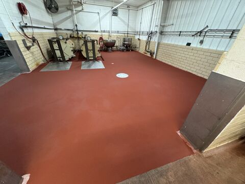
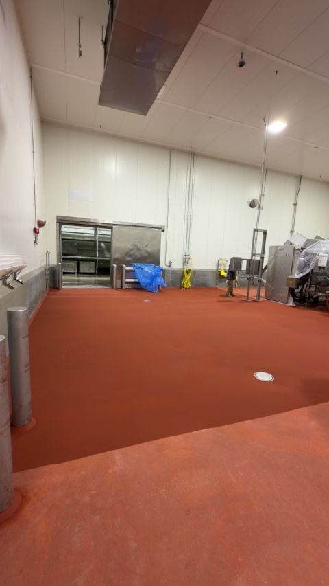
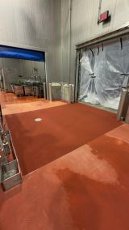
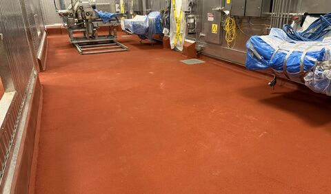

A patch in a single cooler gets the same dedication we bring to a 100,000 square foot install. We do not have a B-team for the little stuff.

That matters because the small jobs are often the ones plant teams stare at every day. The bad corner by the cooler door. The worn patch that keeps collecting water. The crack around a transition that never looks clean no matter how many times sanitation hits it.
Small Floor Problems Still Create Real Plant Problems
A small damaged area can still interrupt forklift traffic, trap soil, hold standing water, create a slip risk, or become the spot everyone has to work around during cleanup. It may not be a capital project, but it still affects the people trying to keep production moving.
That is why the standard cannot drop just because the square footage is smaller. Surface prep still matters. Clean edges still matter. Material selection still matters. Cure time, texture, drainage, and transitions still matter.
The Same Crew Mentality
When we take on a small food processing floor repair, the goal is not to make it disappear from our schedule as fast as possible. The goal is to make that floor stop being a problem for the plant manager, maintenance team, sanitation crew, and operators who deal with it every day.



200 Square Feet or 200,000
Some jobs never make a highlight reel. That does not make them unimportant. If the plant stops worrying about that floor after we leave, the job did what it was supposed to do.
That is the point. Whether it is 200 square feet or 200,000, we want SaniCrete to be the name you call either way.